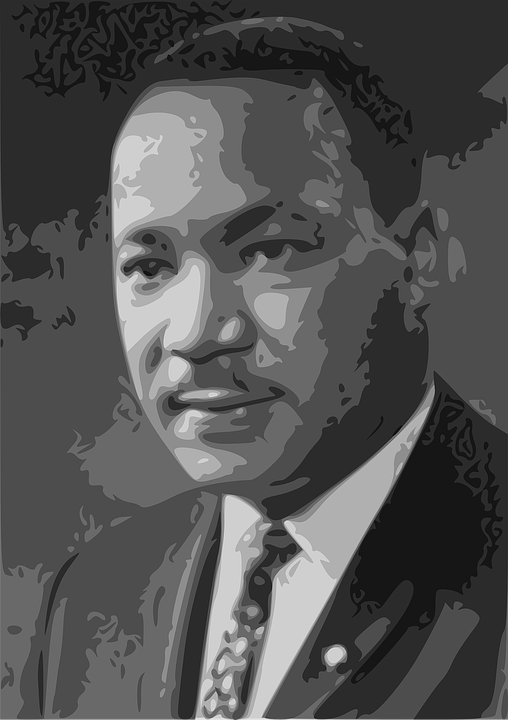

Martin Luther King Jr.
"We must learn to live together as brothers or perish together as
fools."
--Martin Luther King jr.

Martin Luther King jr. before his assassination in 1968
-Here's a timeline of Martin Luther King Jr.'s life-
- 1929 Martin Luther King, Jr., is born in Atlanta to teacher Alberta King and Baptist minister Michael Luther King.
- 1944 Graduates high school at age 15, enters Morehouse College shortly thereafter.
- 1948 Receives BA in sociology from Morehouse College at age 19.
- 1951 Receives degree from Crozer Theological Seminary (Chester, Pa.), enrolls in Boston University Ph.D program.
- 1953 Marries New England Conservatory music student Coretta Scott; they eventually have four children.
- 1954 Becomes minister of Dexter Avenue Baptist Church, Montgomery, Alabama.
- 1955 Receives Ph.D in systematic theology from Boston University.